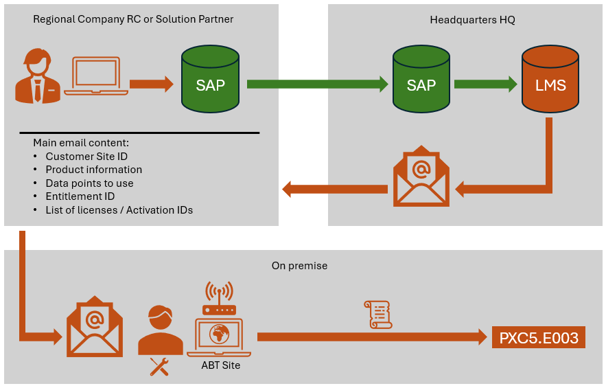
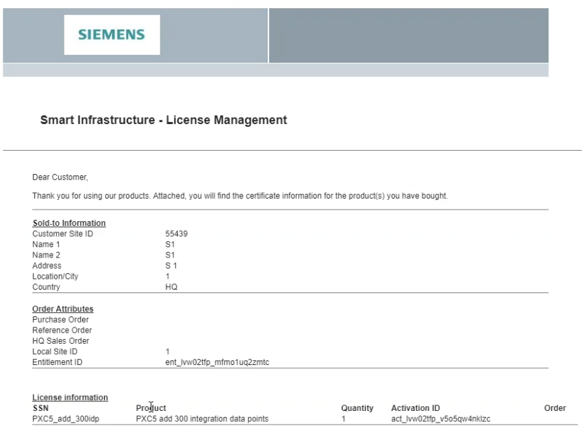
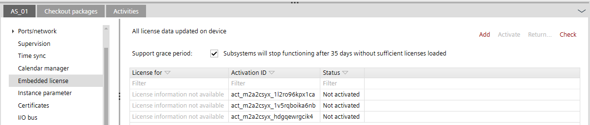
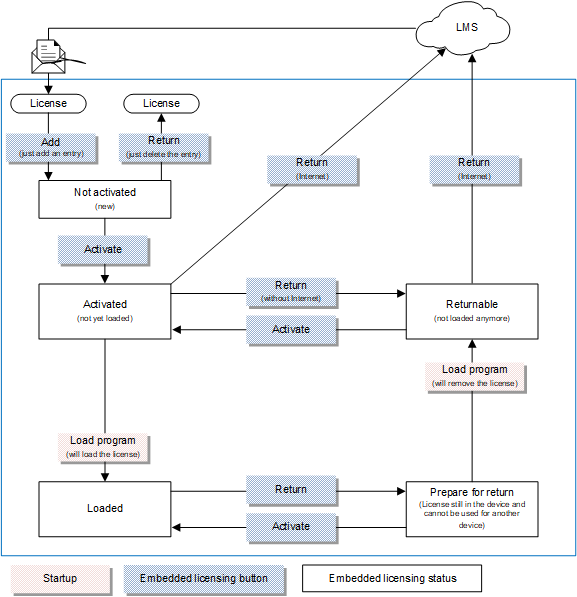
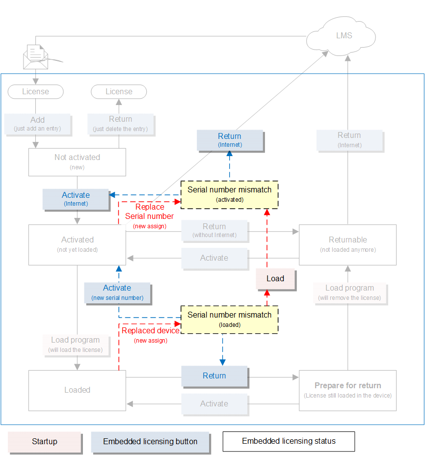

Embedded licensing for Desigo PXC devices
A device license is activated with an online connection to the LMS server (License Management System). An ordered device license must be imported into ABT Site, activated and downloaded to the device.
Online activation
The license file received must be assigned to the device and activated when there is an online connection.

Offline activation
For security-relevant projects where there is no Internet connection available for online activation, the activation can take place via a data exchange from an online ABT Site to an offline ABT Site. An export can be created to be activated on a separate computer with internet connection available. After activation, the license can be exported from the ABT Site online computer and copied to a transport storage medium. This storage medium must be checked for viruses before the license is imported into the ABT Site offline computer. When adding new devices or a license extension to a device, the entire process must be completed.


- Always follow the instructions of the relevant customer to comply with their IT-related requirements and record them in writing.
- Before starting the engineering, clarify on which computer the engineering must take place.
- Strictly avoid connecting to the Internet during the entire project phase.
License file
The license file is sent to the ordering party or customer by e-mail. This e-mail can contain one or more product licenses, which can be freely assigned to a device. The license file is not linked to the device until it is linked to a serial number of the device.
If license files of a unit size are ordered as standard for a project, for example, 300 data points, several license files can be assigned to one device. This allows the devices to be optimally licensed.

User interface and detail workflow of embedded licensing

Details tab > Embedded license
Standard workflow:
The detailed workflow shows the relationships between the individual actions with LMS, ABT Site Startup menu, embedded licensing functionality and the resulting statuses.

Workflow by serial number mismatch:
A serial mismatch is most likely to occur when a device is replaced because a new device will always have a new serial number. In such a case, return the device license with the old serial number and renew the activation of the license with the new serial number.
Replacing a device
